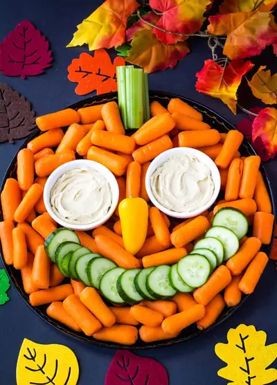

Halloween Veggie Tray

Ingredients
- 2 lbs baby carrots
- 1 celery stalk
- 1 mini bell pepper
- 1 English cucumber (cut into thin slices)
- 1/2 cup gluten-free hummus
Steps
- Spread baby carrots over the tray so that the entire tray is covered in orange carrots. It doesn't matter if they're a little haphazard, as long as the tray is covered in orange.
- Thinly slice English cucumber. Place over the carrots in the shape of a mouth.
- Prepare Gluten-Free Hummus or use store bought hummus, and place in small bowls, centering them for the eyes.
- Slice one celery stalk into three separate pieces. Arrange at the top of the tray to look like a stem.
- Place mini bell pepper in the center of the tray for the nose. Serve and enjoy!
Recipe by Anjali Shah · The Picky Eater, from The Picky Eater. Saved here for personal use; the original has the full notes, tips and photos. Open original